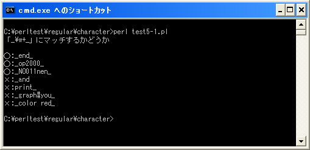

よく使用される文字クラスの略記
文字クラスは列挙した文字の一覧のどれかにマッチするものですが、頻繁に利用される文字クラスがあります。例えばいずれかの数字にマッチする「[0-9]」などは頻繁に利用されます。このようなよく使用される文字クラスを表す略記法が用意されています。
ここでは文字クラスの略記法について確認していきます。
数字を表す「¥d」「¥D」
「¥d」は数字を表す略記法です。文字クラスの「[0-9]」に該当します。
/[0-9]/ /¥d/ /[¥d]/
上記ではいずれも「0,1,2,3,4,5,6,7,8,9」のいずれかにマッチします。「¥d」は文字クラスを表すブラケット[]の外側でも記述できますがブラケット内にも記述することが出来ます。
また「¥D」は数字以外を表す略記法です。文字クラスの「[^0-9]」又は「[^¥d]」に該当します。
/[^0-9]/ /[^¥d]/ /¥D/ /[¥D]/
上記ではいずれも「0,1,2,3,4,5,6,7,8,9」以外の文字のいずれかにマッチします。
「¥d」を使い任意の桁数の数字にマッチさせる場合は次のように記述できます。
/¥d+/
※キャレット(^)はブラケット[]内に記述した場合だけ否定の意味を持ちますので「^¥d」はまったく違う意味になりますので注意して下さい。
単語の構成文字を表す「¥w」「¥W」
「¥w」は単語を構成する文字の一つを表す略記法です。文字クラスの「[a-zA-Z0-9_]」に該当します。アルファベット、数字、アンダーバーのいずらかにマッチします。
/[a-zA-Z0-9_]/ /¥w/ /[¥w]/
上記ではいずれも「aからz」「AからZ」「0から9」「_」のいずれかにマッチします。「¥w」は文字クラスを表すブラケット[]の外側でも記述できますがブラケット内にも記述することが出来ます。
また「¥W」は単語を構成する文字以外を表す略記法です。文字クラスの「[^a-zA-Z0-9_]」又は「[^¥w]」に該当します。
/[^a-zA-Z0-9_]/ /[^¥w]/ /¥W/ /[¥W]/
上記ではいずれも「aからz」「AからZ」「0から9」「_」以外の文字のいずれかにマッチします。
「¥w」を使い任意の連続する単語を構成する文字にマッチさせる場合は次のように記述できます。
/¥w+/
空白文字を表す「¥s」「¥S」
「¥s」は空白文字を表す文字の一つを表す略記法です。空白文字とは空白「 」の他に改行「¥n」、復帰「¥r」、改ページ「¥f」、水平タブ「¥t」です。文字クラスの「[ ¥n¥r¥f¥t]」に該当します。
/[ ¥n¥r¥f¥t]/ /¥s/ /[¥s]/
上記ではいずれも空白、改行、復帰、改ページ、水平タブのいずれかにマッチします。「¥s」は文字クラスを表すブラケット[]の外側でも記述できますがブラケット内にも記述することが出来ます。
また「¥S」は空白文字以外を表す略記法です。文字クラスの「[^ ¥n¥r¥f¥t]」又は「[^¥s]」に該当します。
/[^ ¥n¥r¥f¥t]/ /[^¥s]/ /¥S/ /[¥S]/
上記ではいずれも空白、改行、復帰、改ページ、水平タブ以外の文字のいずれかにマッチします。
「¥s」を使い任意の連続する空白文字に文字にマッチさせる場合は次のように記述できます。
/¥s+/
サンプルプログラム
では簡単なプログラムで確認して見ます。
use strict;
use warnings;
use utf8;
binmode STDIN, ':encoding(cp932)';
binmode STDOUT, ':encoding(cp932)';
binmode STDERR, ':encoding(cp932)';
print "「_¥¥w+_」にマッチするかどうか¥n¥n";
&check("_end_");
&check("_op2000_");
&check("_NO011nen_");
&check("_and");
&check("print_");
&check("_graph#you_");
&check("_color red_");
sub check{
my ($str) = @_;
if ($str =~ /_¥w+_/){
print "○:$str¥n";
}else{
print "×:$str¥n";
}
}
上記を「test5-1.pl」の名前で保存します(文字コードはUTF-8です)。そしてコマンドプロンプトを起動し、プログラムを保存したディレクトリに移動してから次のように実行して下さい。

( Written by Tatsuo Ikura )

著者 / TATSUO IKURA
初心者～中級者の方を対象としたプログラミング方法や開発環境の構築の解説を行うサイトの運営を行っています。